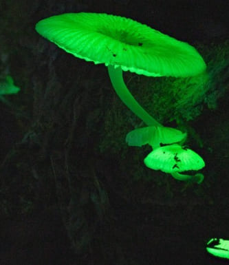
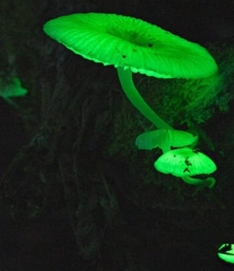
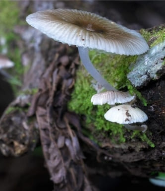
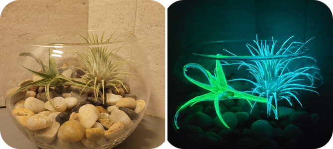
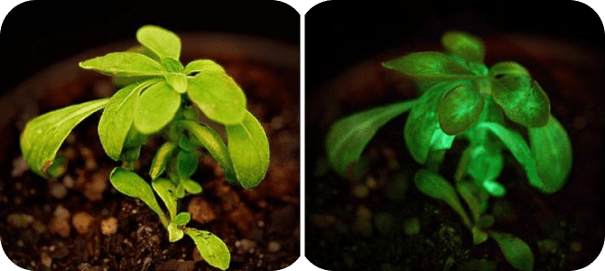

<section class="advantage__section" id="tech">
    <div class="container">
        <div class="advantage__section-wrapper">
            <p class="info__tag advantage__tag">
                <span>Технологія</span>
            </p>
            <h2 class="advantage__title">
                Добрива на основі витяжки Neonothopanus <br> 
                nambi – 
                <span>біолюмінесцентного гриба</span> – у рослинах.
            </h2>
            <div class="advantage__items">
                <div class="advantage__item advantage__item-1">
                    <h3 class="advantage__items-title">
                        Світлове випромінювання
                    </h3>
                    <p class="advantage__text">
                        цього гриба пов'язане з дією так званої 
                        <span>кавової кислоти</span> – органічної молекули, яка також потрібна рослинам для утворення клітинних стінок. 
                    </p>
                </div>
                <div class="advantage__item advantage__item-2">
                    <p class="advantage__text">
                        Вчені вилучили з 
                        <span>Neonothopanus nambi</span> частинки, що відповідає за перетворення кавової кислоти на 
                        <span>світловипромінюючий пігмент люциферин</span> (який при окисленні генерує фотони) і додали його до добрива. 
                    </p>
                </div>
                <div class="advantage__item advantage__item-3">
                    <!--  -->
                    <div class="advantage__slide">
                        
                        
                    </div>
                </div>
                <div class="advantage__item advantage__item-4">
                    <p class="advantage__text">
                        В результаті вийшли добрива, які дають можливість рослинам світитися в темряві
                        <span>яскравіше, ніж сам гриб.</span>
                    </p>
                </div>
            </div>
            <h2 class="advantage__title">
                Приклади <br>
                використання  <span>«Garden Biolight»:</span>
            </h2>
            <div class="advantage__imgs">
                
                
            </div>
            <a href="#card" class="order__btn">
                <span>ДЕТАЛЬНІШЕ</span>
                
            </a>
        </div>
    </div>
</section>